Jogos de console rodando nativo no PC e ferramentas de jogos.
| Vídeo | Projeto | O que faz | Pasta de origem | |
|---|---|---|---|---|
| Castlevania Symphony of the Night NATIVO no PC e | 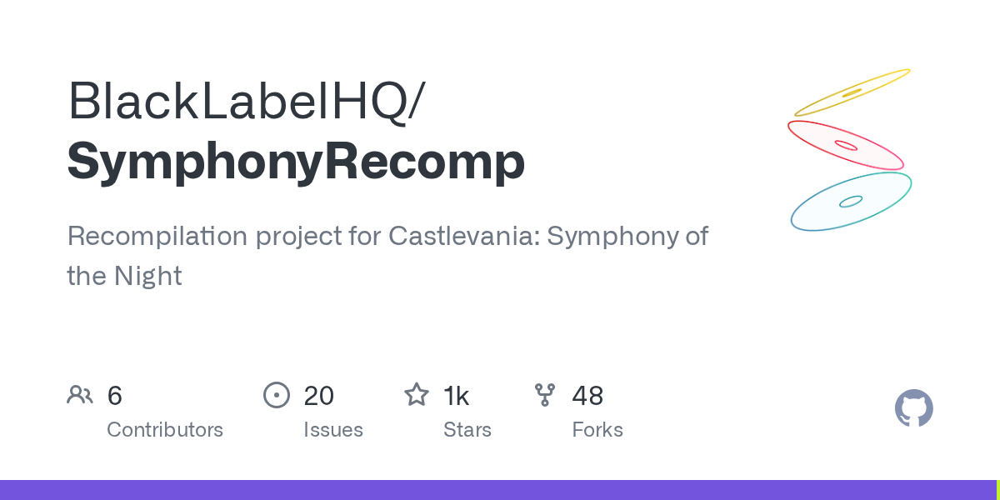 | BlackLabelHQ/SymphonyRecomp | Recompilação de Castlevania: Symphony of the Night para PC. | PORTS DE JOGOS PARA PC E CONSOLES / PORT PS1 PARA PC |
| COMO JOGAR ZELDA BOTW NATIVO NO PC! 🎮 60 FPS, PT | 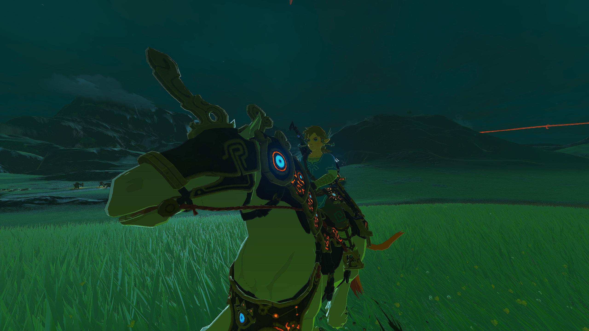 | Revivedx/SavageWindRecomp | Recompilação estática de Zelda: Breath of the Wild (em progresso). | PORTS DE JOGOS PARA PC E CONSOLES / PORTS DE SWITCH 1 PARA PC |
| The Rose (더로즈) — Nebula | Official Audio | 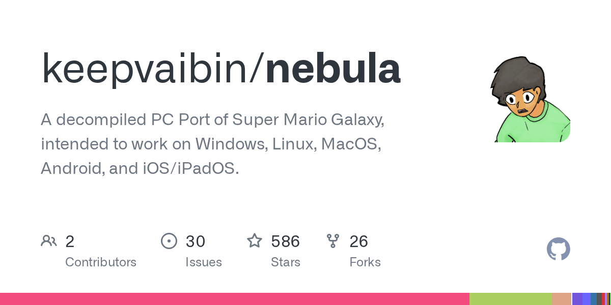 | keepvaibin/nebula | Port/descompilação de Super Mario Galaxy para PC. | PORTS DE JOGOS PARA PC E CONSOLES / PORTS DE SWITCH 1 PARA PC |
| Zelda TotK no PC Como Jogar (Passo a Passo) | 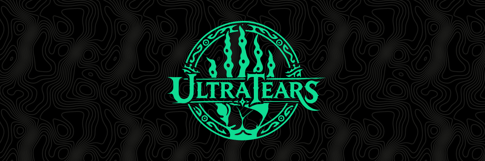 | kuraeow/ultratears | Port nativo de Zelda: Tears of the Kingdom 1.4.3 para Windows. | PORTS DE JOGOS PARA PC E CONSOLES / PORTS DE SWITCH 1 PARA PC |
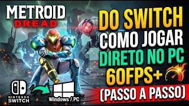 Metroid Dread Remaster no PC Como jogar (Passo a | 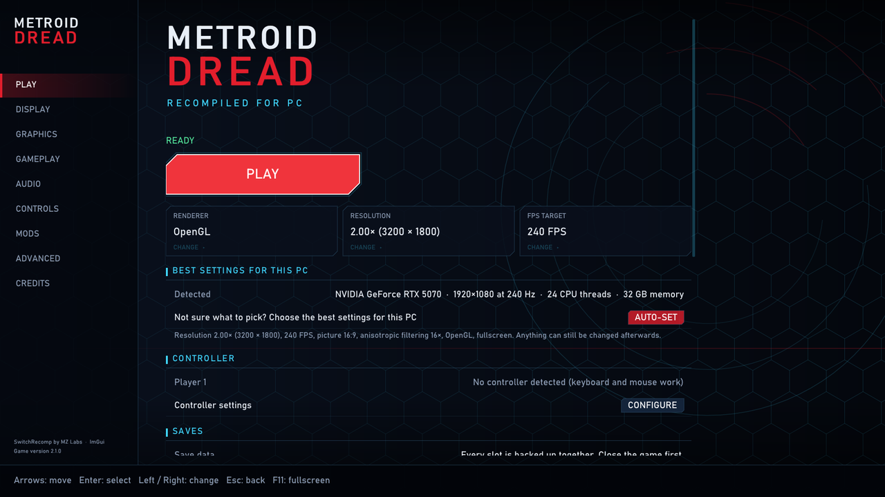 | yozander2009-stack/Metroid-Dread-Recomp | Recompilação de Metroid Dread para PC. | PORTS DE JOGOS PARA PC E CONSOLES / PORTS DE SWITCH 1 PARA PC |
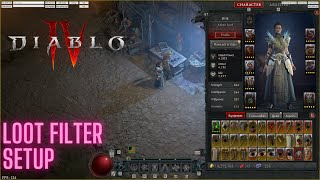 Loot Filter Setup - Diablo 4 | 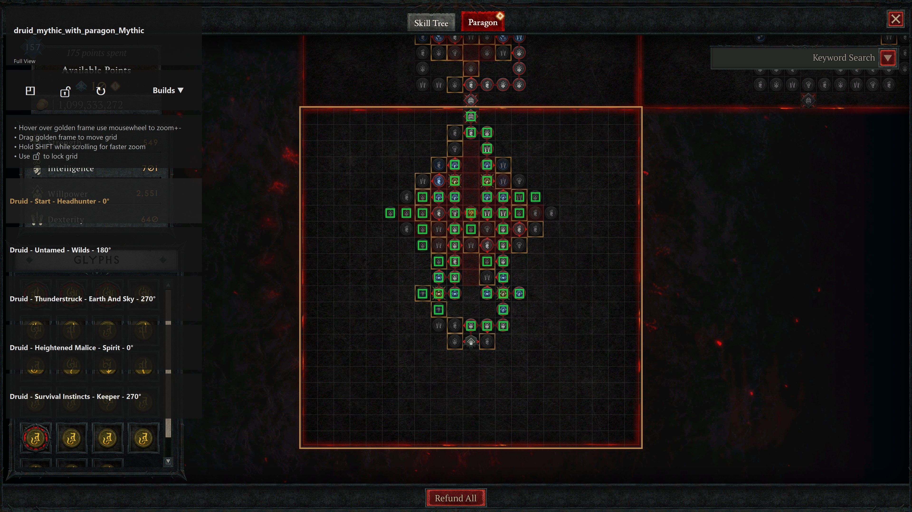 | d4lfteam/d4lf | D4LF: filtro de loot automático para Diablo IV. | DIABLO 4 TEMPORADAS ITEMS,LOJAS E BUILDS / FILTRO DE LOOT |
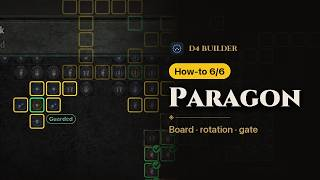 D4 Builder Guide #6 · Paragon Boards (Attach, Ro | 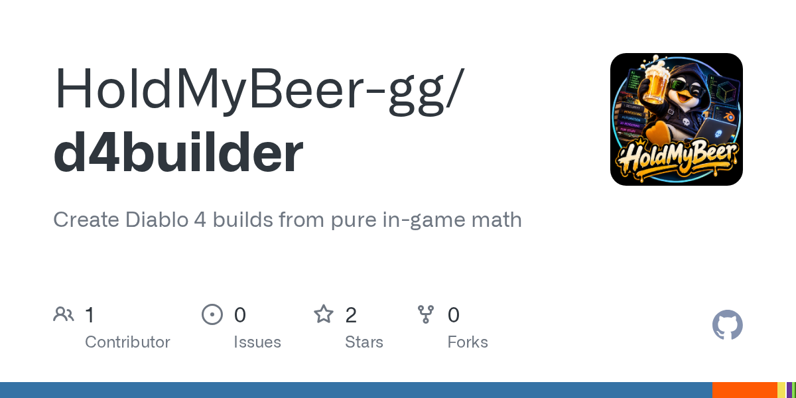 | HoldMyBeer-gg/d4builder | Monta builds de Diablo IV com a matemática do jogo. | PROGRAMAÇÂO IA AGENT / GITHUBS / VARIADOS |
| Instalando o REFramework no RESIDENT EVIL 2 Rema | 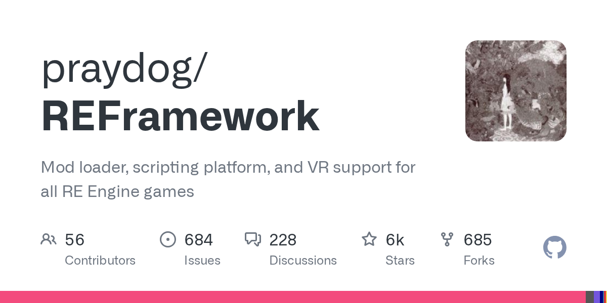 | praydog/RE2-Mod-Framework | Framework de mods em primeira pessoa para Resident Evil 2/3. | NINTENDO SWITCH DESBLOQUEIO / GITHUB PROGRAMAS |
| sem vídeo | 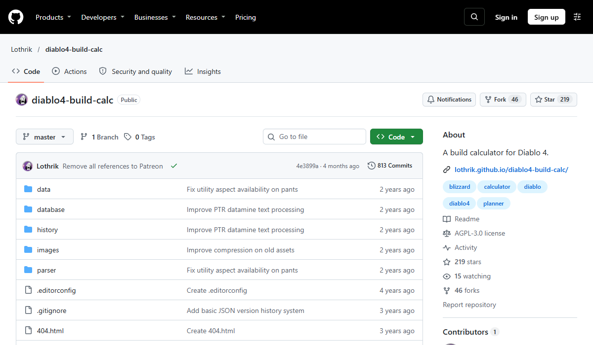 | Lothrik/diablo4-build-calc | Calculadora de builds do Diablo IV. | curado — busca na internet |
| sem vídeo | 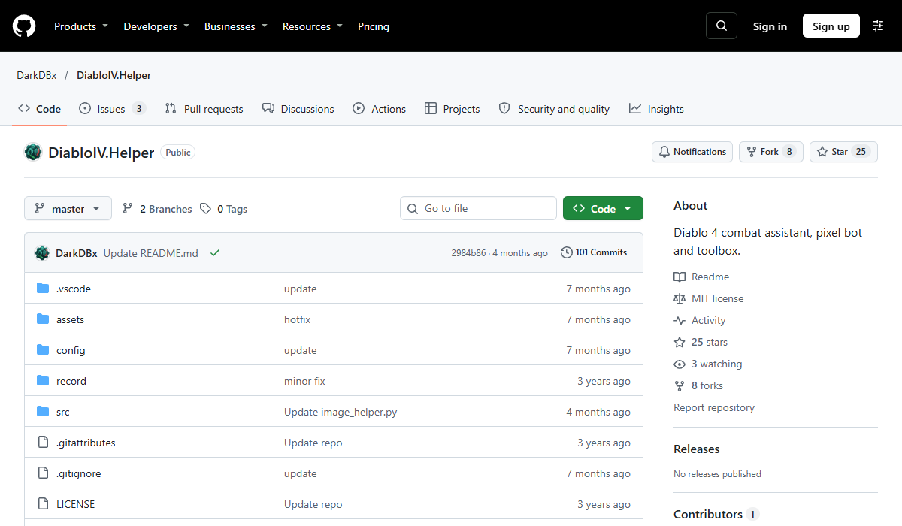 | DarkDBx/DiabloIV.Helper | Assistente de combate e caixa de ferramentas para Diablo IV. | curado — busca na internet |
| sem vídeo | 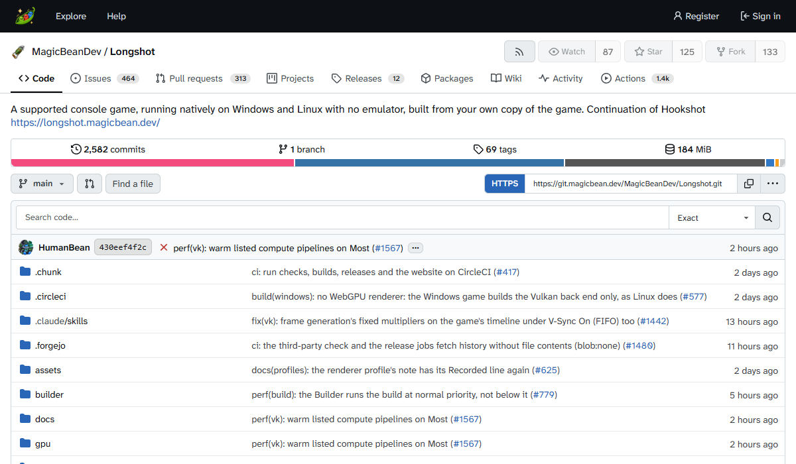 | MagicBeanDev/Longshot | Recompilação estática de Zelda: Ocarina of Time rodando nativo no Windows e Linux, sem emulador, a partir da sua cópia do jogo (continuação do Hookshot). | fora do GitHub (Bitbucket / site oficial) |
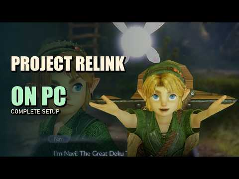 How to Install Project ReLink | Zelda Ocarina | 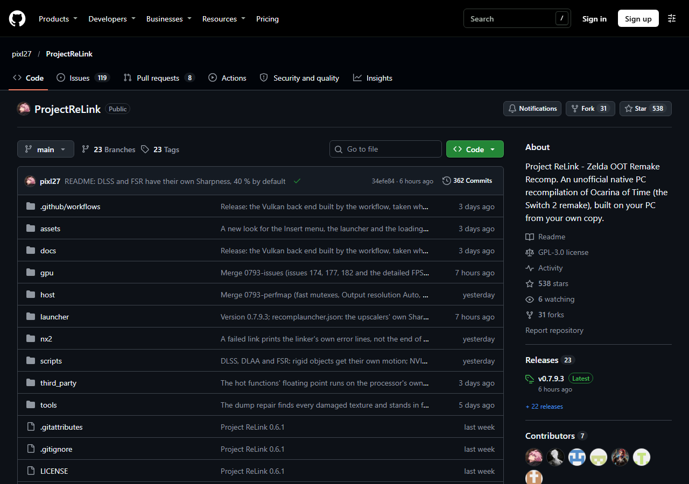 | pixl27/ProjectReLink | Recompilação estática de Zelda: Ocarina of Time (remake do Switch 2) nativa no Windows, sem emulador, a partir da sua cópia. | PORTS DE JOGOS PARA PC E CONSOLES / PORTS DE SWITCH 2 PARA PC |
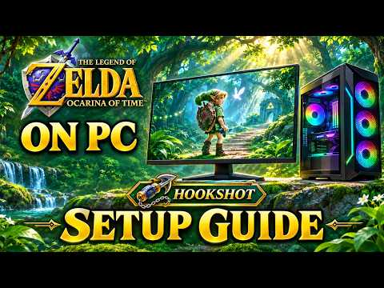 How to Set Up Zelda Ocarina of Time Remake on | 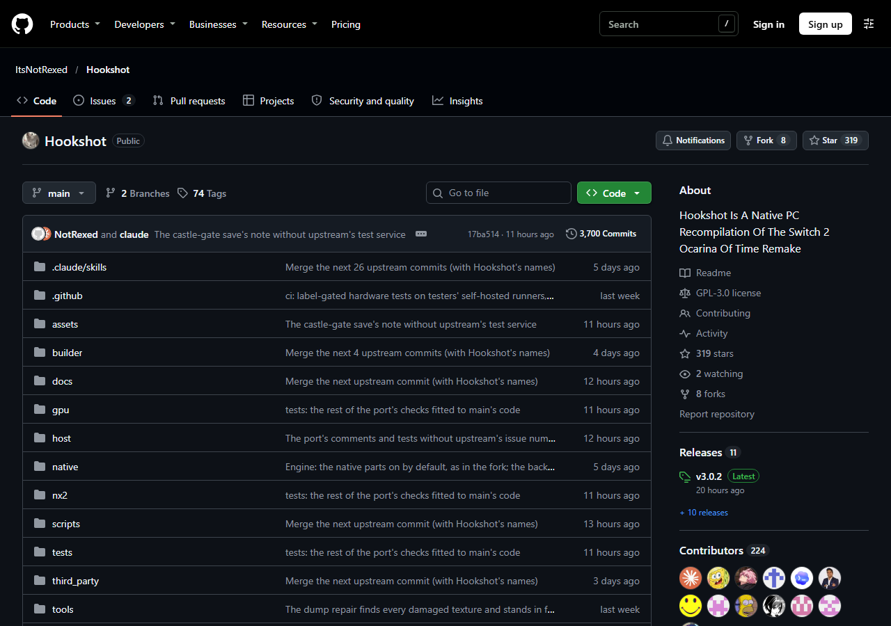 | ItsNotRexed/Hookshot | Recompilação estática nativa de The Legend of Zelda: Ocarina of Time (remake do Switch 2) para PC, sem emulador, a partir da sua cópia. | PORTS DE JOGOS PARA PC E CONSOLES / PORTS DE SWITCH 2 PARA PC |
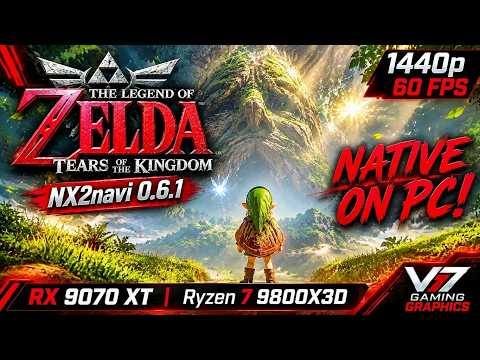 Level 1 | ZELDA ON PC! NX2navi 0.6.1 + INSTALL | 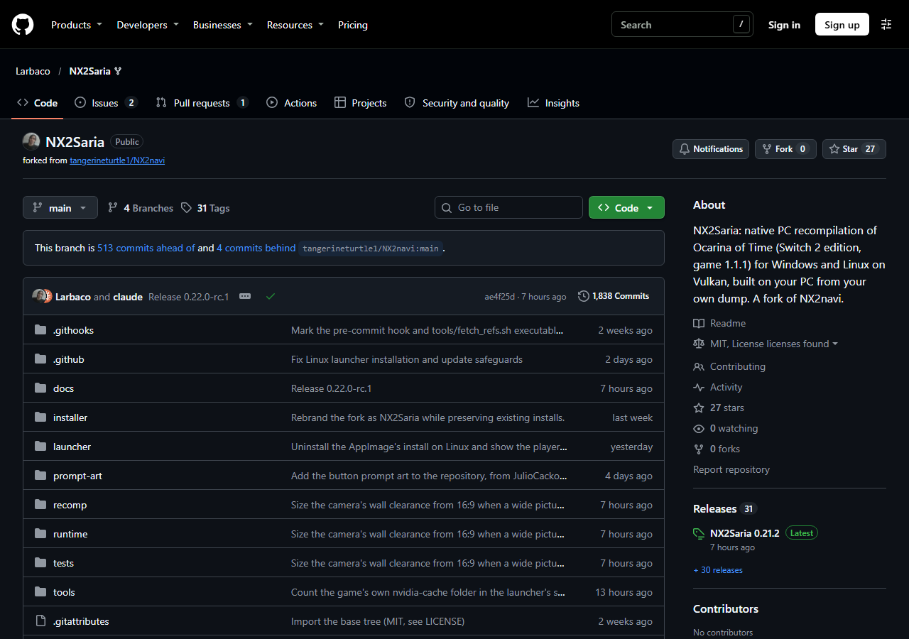 | Larbaco/NX2Saria | Recompilação nativa de Zelda: Ocarina of Time (Switch 2) para PC, fork do NX2navi, voltado a placas AMD e PCs modestos. | PORTS DE JOGOS PARA PC E CONSOLES / PORTS DE SWITCH 2 PARA PC |
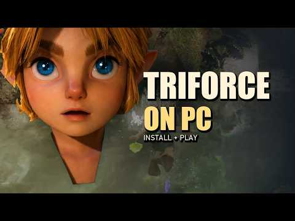 How to Install Triforce on PC | Zelda Ocarina of Ti | 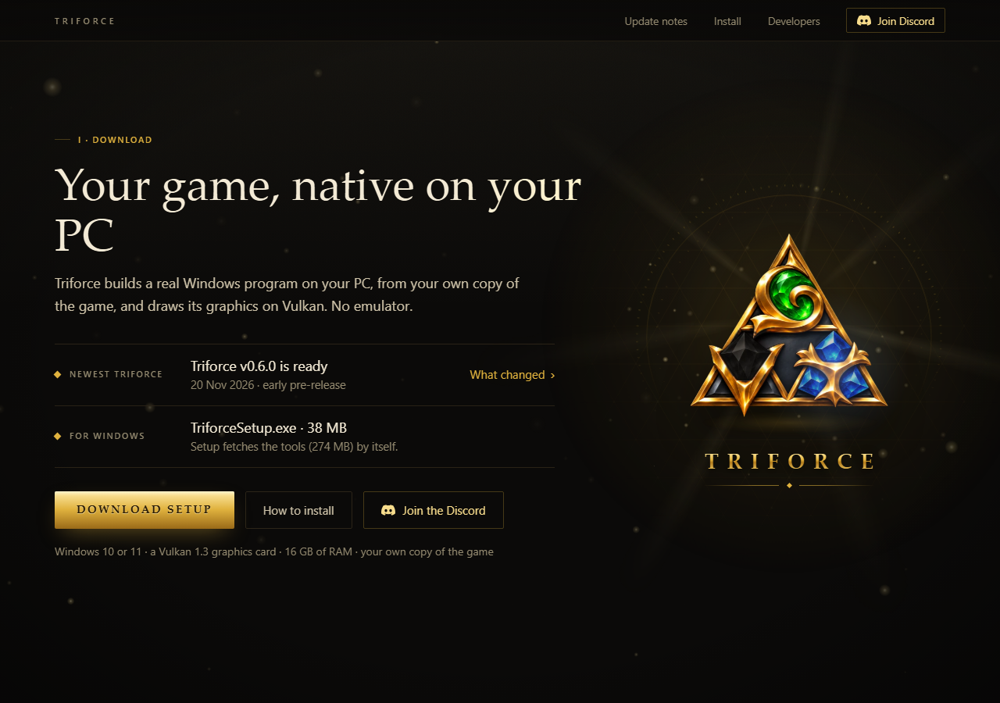 | Triforce Project | Recompilação nativa de Zelda: Ocarina of Time (Switch 2) para PC — união do Hookshot e do NX2navi. Código em git.triforceproject.com/triforce/source. | PORTS DE JOGOS PARA PC E CONSOLES / PORTS DE SWITCH 2 PARA PC |
| sem vídeo | 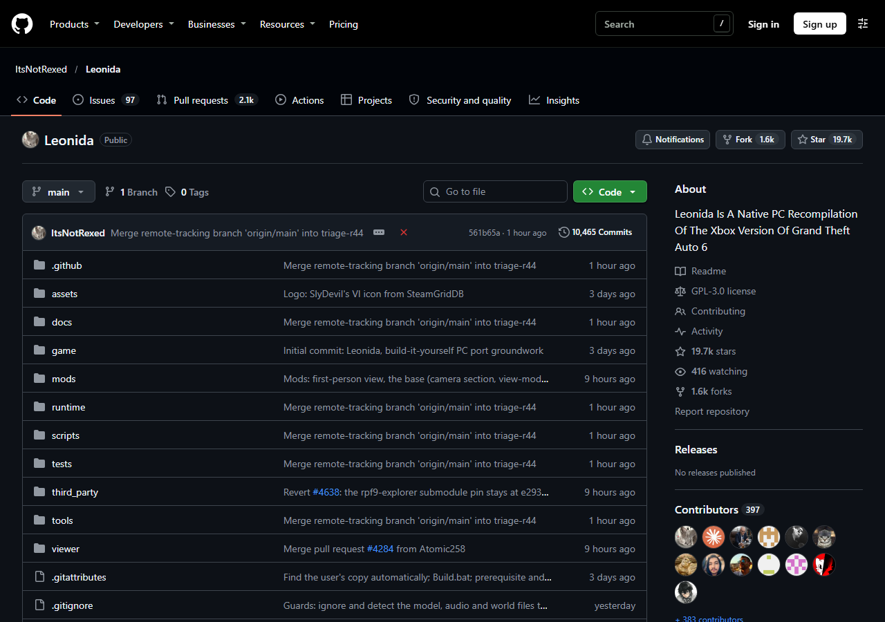 | ItsNotRexed/Leonida | Recompilação estática nativa de GTA VI (versão Xbox Series) para PC, construída na sua máquina a partir da sua cópia. Ainda não inicia o jogo. | PORTS DE JOGOS PARA PC E CONSOLES / PORTS DE XBOX SERIES PARA PC |
| sem vídeo | 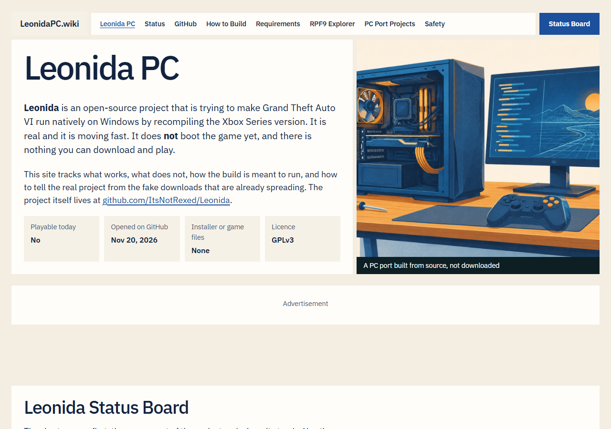 | leonidapc.wiki | Acompanha o projeto Leonida: o que já funciona na recompilação de GTA VI para PC, status, requisitos de build e como evitar downloads falsos. | PORTS DE JOGOS PARA PC E CONSOLES / PORTS DE XBOX SERIES PARA PC |
| sem vídeo | 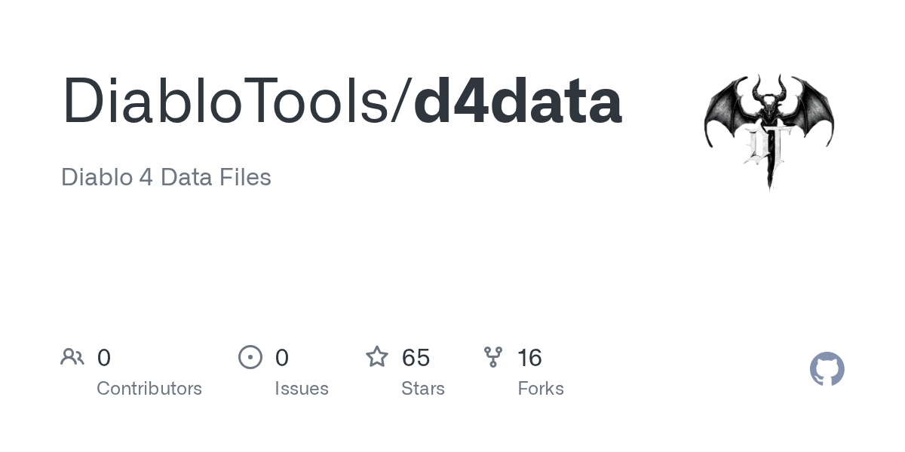 | DiabloTools/d4data | Extrai os dados do Diablo IV (itens, skills, textos) direto dos arquivos do jogo. | Ports & mods de jogos |